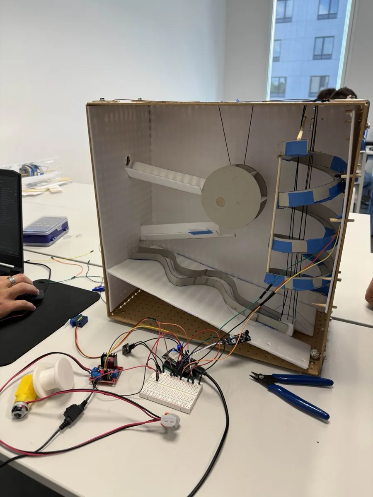

Workshop B1
Machine de Rube Goldberg
Ce projet de groupe (Team G6) avait pour objectif de construire une machine "inutilement complexe" pour réaliser une tâche simple via une réaction en chaîne. Il mêle créativité, logique, travail manuel, modélisation 3D et programmation IoT.
Scénario : Nous sommes en 2068 et nous avons créé une attraction loufoque "Planet Coaster".
Technologies & Outils
Fusion 360
C++ / IoT
Impression 3D
Découpe Laser
ESP8266
Fichiers du projet
Consultez le dossier complet du projet détaillant la conception, le code et la gestion de projet :
Visuels
